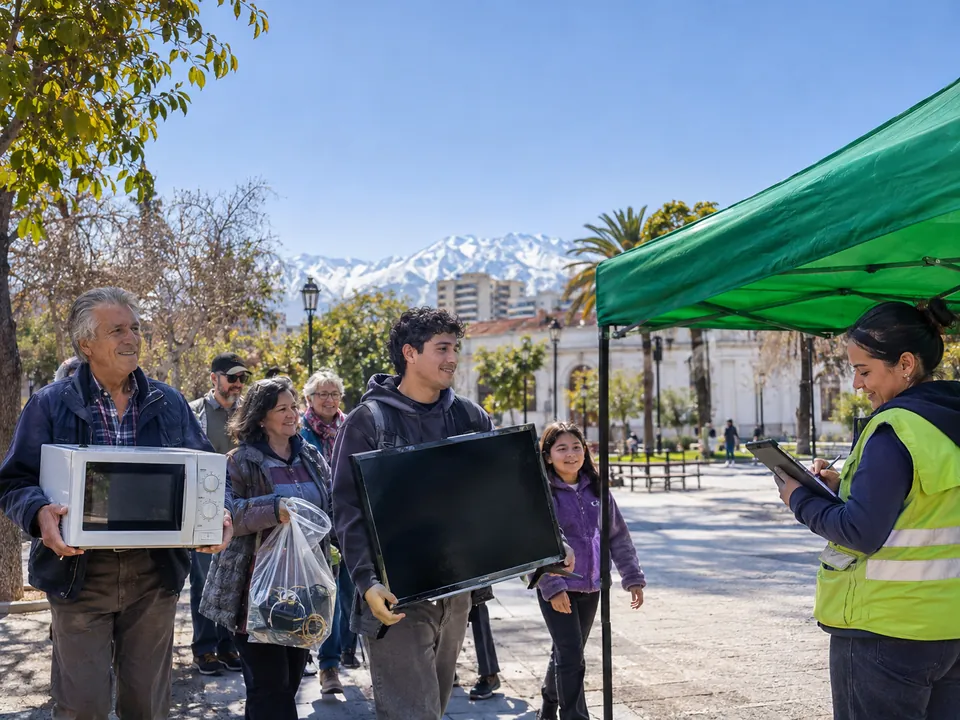
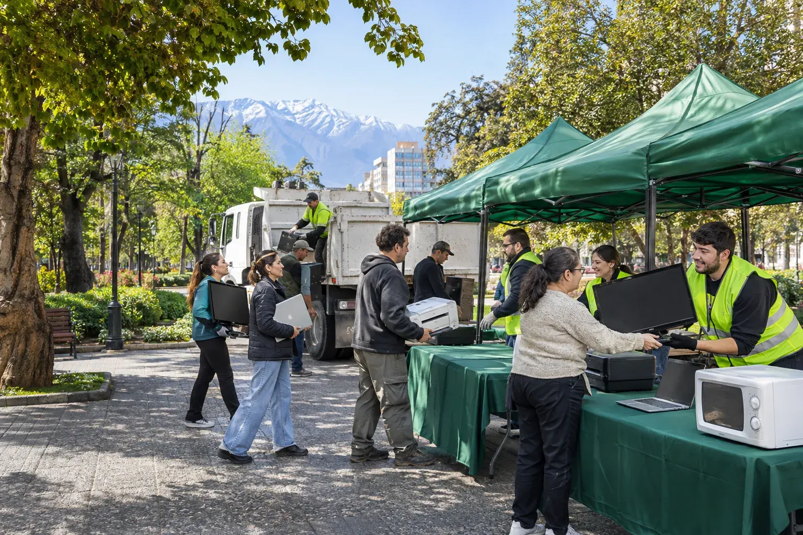
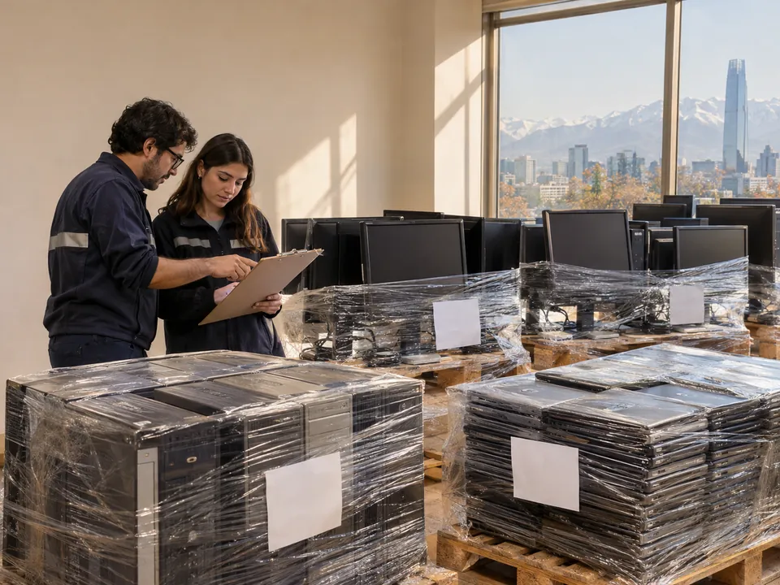
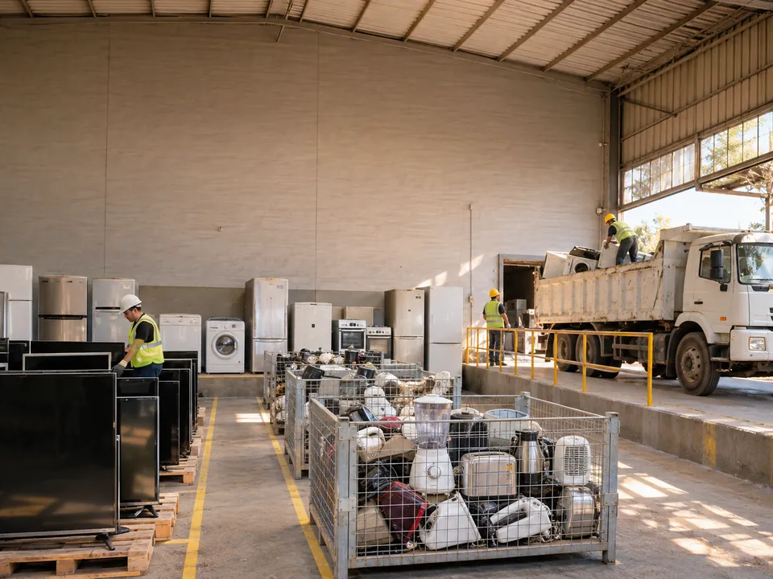
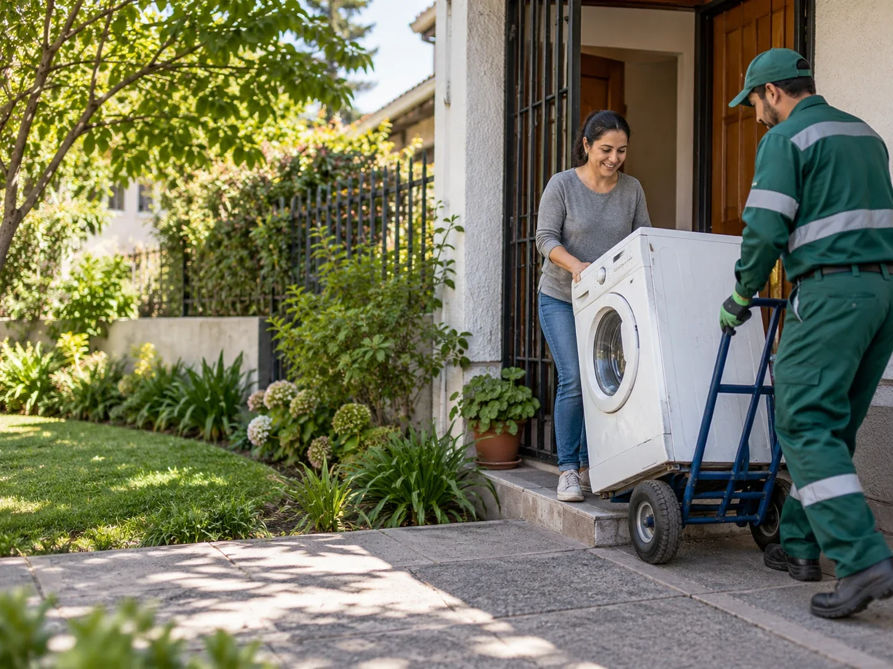
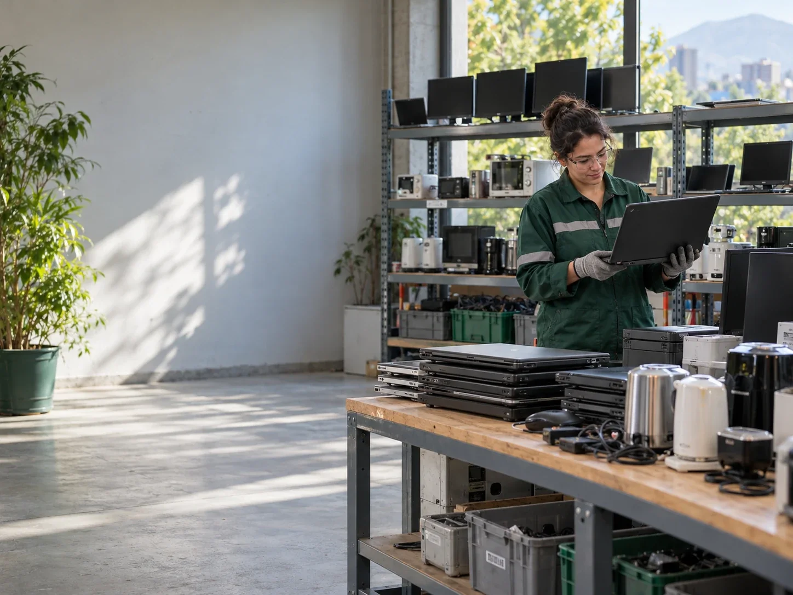
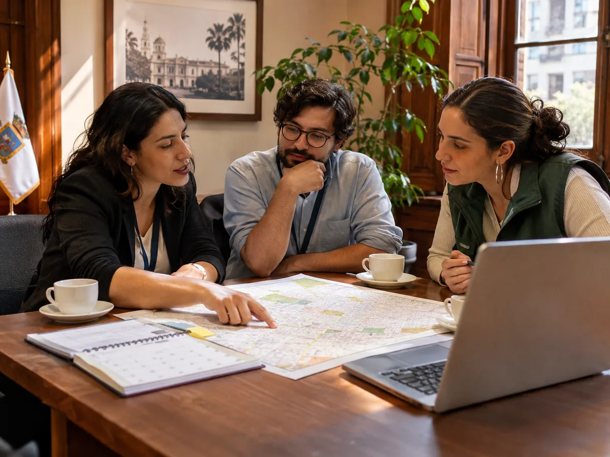

Municipalidades
Para vecinas y vecinos
Puntos temporales de entrega en tu comuna.
Organizar campaña municipalGuías
Las cuatro etapas, qué se hace en cada una y quién participa.
Qué cuenta como pequeño o grande, con ejemplos, y cómo influye en la campaña.
Quién la pide, ante quién, con cuánta anticipación y cómo obtenerla.
Documentos
Responde Sí, No o No sé en cada pregunta: te mostramos qué hacer con lo que falta. Tus respuestas quedan en este dispositivo.
Lo que exige cada norma a una campaña de RAEE, en simple y con sus artículos oficiales.
¿No encuentras lo que buscas?

Organizamos campañas de recolección de aparatos eléctricos y electrónicos en desuso en la Región Metropolitana.La autorización sanitaria se pide a la SEREMI de Salud 40 días hábiles antes del inicio.
Revisa los datos y envía la ficha. No presenta la solicitud ante la SEREMI.

¡Gracias!
Don Reco y Lola Lata dejaron tu ficha escrita en WhatsApp. Envíala desde ahí y te respondemos para coordinar la reunión.
Elige un tipo para ver cómo se recibe en la campaña.
Notebooks, teclados, impresoras y otros periféricos. Indica si traen baterías incorporadas: cambian la forma de recibirlos y almacenarlos.
Televisores, monitores y otras pantallas electrónicas. Las pantallas dañadas requieren condiciones de recepción y manipulación adecuadas.
Los que no superan 50 cm por ningún lado: celulares, hervidores, secadores de pelo, planchas, tostadoras, consolas y similares. Las pilas y baterías sueltas no se incluyen por defecto.
Los que superan 50 cm por algún lado: lavadoras, secadoras, cocinas y otros electrodomésticos. Dependen del espacio, la carga y el destino disponibles. Los refrigeradores y el aire acondicionado se reciben enteros y aparte, por sus gases refrigerantes.
Orientativo: cada campaña confirma qué recibe después de revisar estado, baterías, acopio y destino.
Cuéntanos qué quieres organizar. También puedes enviarnos fotos de los aparatos y del lugar.

Para vecinas y vecinos
Puntos temporales de entrega en tu comuna.
Organizar campaña municipal
Para equipos en desuso
Recolección en oficinas, sedes e instituciones.
Organizar campaña en mi empresa
Para sistemas REP
Campañas con equipos aceptados y operación definida.
Coordinar con un sistema de gestiónSe suman a tu campaña y funcionan durante sus jornadas. Cada uno se cotiza aparte, según lo que necesite tu comuna.

Para municipalidades · Durante la campaña
Retiramos los aparatos en el domicilio de vecinos inscritos que no pueden llevarlos al punto de recolección, en rutas programadas durante la campaña.
Los vecinos se inscriben indicando su dirección y el tipo, la cantidad, las medidas y el estado de cada aparato. Planificamos las rutas, retiramos los equipos desde un lugar de fácil acceso y registramos cada retiro junto con lo recibido en la campaña. No desconectamos, desarmamos ni intervenimos los equipos, y entramos al domicilio solo si hace falta y con autorización. La cobertura y los cupos se acuerdan con la municipalidad.

Para municipalidades · Durante la campaña
Separamos los equipos completos que podrían tener una segunda vida y los mantenemos aparte del resto, con un destino diferenciado.
En la recepción, un encargado clasifica cada equipo de forma preliminar como potencialmente reutilizable o no apto. Los reutilizables se identifican, se guardan aparte y salen hacia un gestor autorizado que los revisa y prepara. Es una selección preliminar: no asegura que el equipo funcione o sea seguro, ni que haya dejado de ser residuo. Si no se puede reutilizar, se gestiona como RAEE, igual que el resto.
Una campaña de recolección es una actividad temporal y esporádica. Antes de anunciarla, define qué aparatos se recibirán, quién será responsable y cómo llegarán los residuos a su destino.
La solicitud ante la SEREMI de Salud describe la campaña y reúne los antecedentes del artículo 24 del DS 29/2024. Presentarla a tiempo permite que la autoridad la revise y, si corresponde, formule observaciones.
Prepara el lugar, informa cómo entregar los equipos y capacita al personal. Durante la campaña, recibe solo los RAEE contemplados, registra las cantidades, aplica las medidas de seguridad y coordina su traslado al destino definido.
El cierre no termina cuando se retira el último equipo. Confirma las cantidades recibidas, el transporte y los destinos, conserva los respaldos y prepara el reporte de la campaña en el RETC.
Ejemplos de RAEE. Cada campaña define los suyos.
Pequeños aparatos
No se incluyen por defecto pilas ni baterías sueltas, ni residuos que no sean RAEE.
Un conjunto de actividades temporales y esporádicas para recibir o recoger aparatos eléctricos y electrónicos en desuso y enviarlos a un centro de acopio o a una instalación de valorización o eliminación (DS 29/2024, art. 3, letra c).
Sí. Se pide a la SEREMI de Salud con al menos dos meses de anticipación: 40 días hábiles antes del inicio (arts. 24 y 39). Revisa los requisitos del DS 29/2024.
Depende de los aparatos definidos para cada campaña. Las pantallas dañadas y otros equipos especiales requieren condiciones de recepción adecuadas.
No por defecto. El DS 22/2025 del Ministerio del Medio Ambiente regula pilas y aparatos eléctricos y electrónicos, pero una campaña de RAEE debe definir expresamente si recibe otros residuos.
Es un servicio adicional para municipalidades que se suma a la campaña y se cotiza aparte: en rutas programadas durante sus jornadas, retiramos los aparatos en el domicilio de vecinos inscritos que no pueden llevarlos al punto. Antes de confirmar cada retiro revisamos el equipo, la dirección, el acceso, la cobertura y los vehículos disponibles.
Depende del lugar, la duración, los aparatos, la cantidad estimada y los servicios necesarios. Con la ficha podemos evaluar una propuesta.
Pídela con al menos dos meses de anticipación. Completa la ficha y coordinamos una reunión para definir aparatos, cantidades y lugares.
